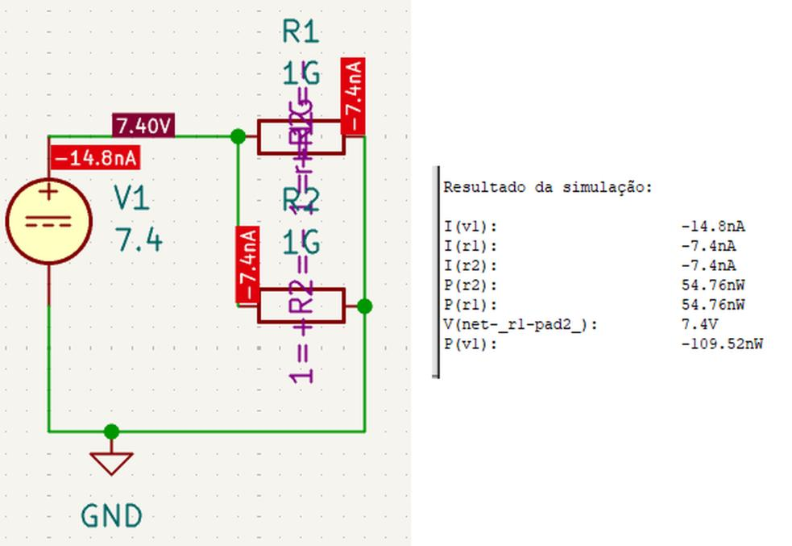
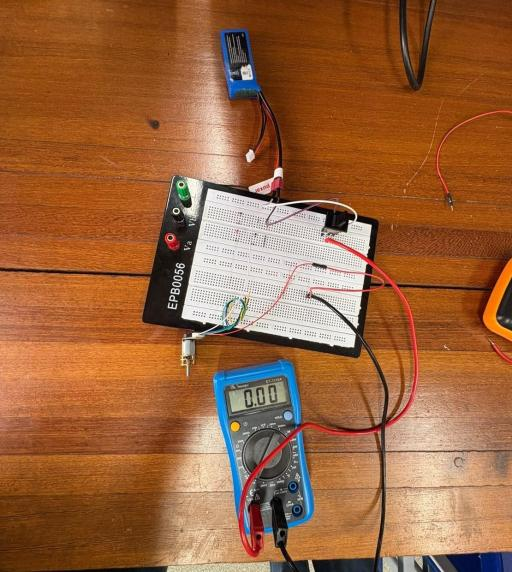
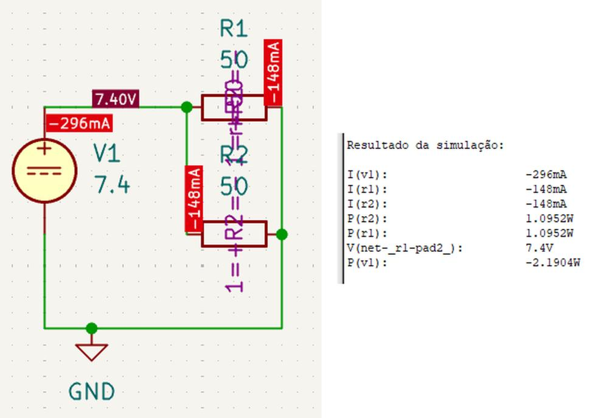
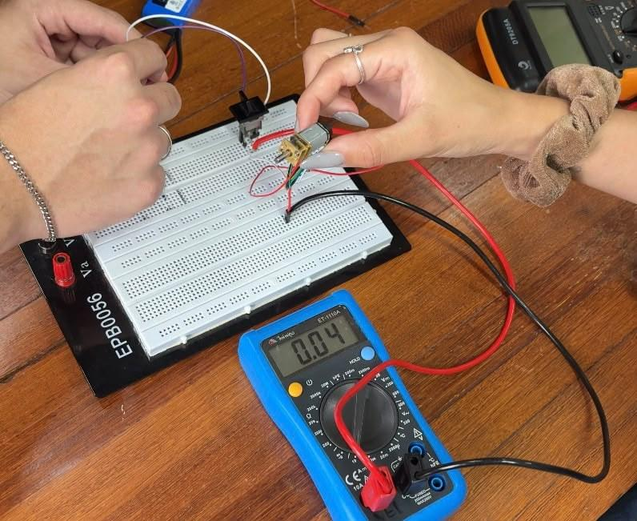
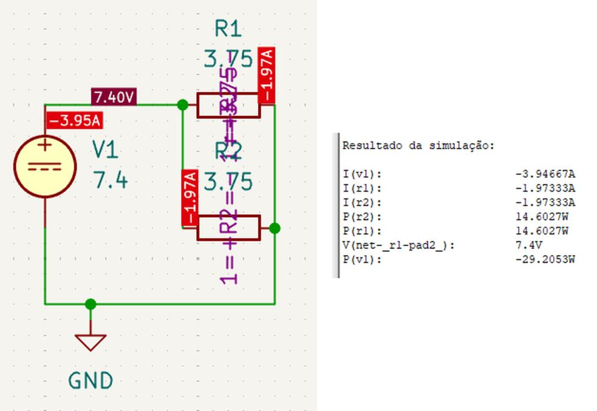
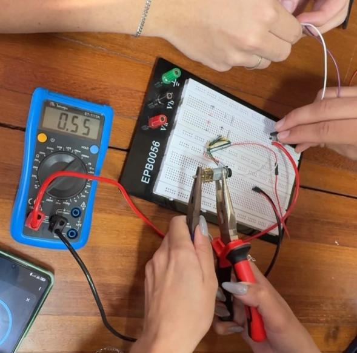
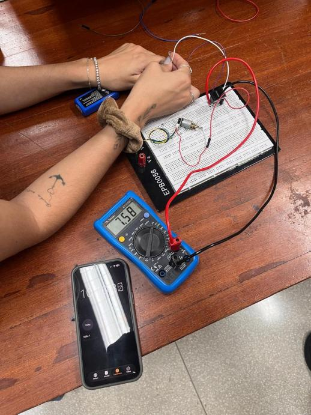
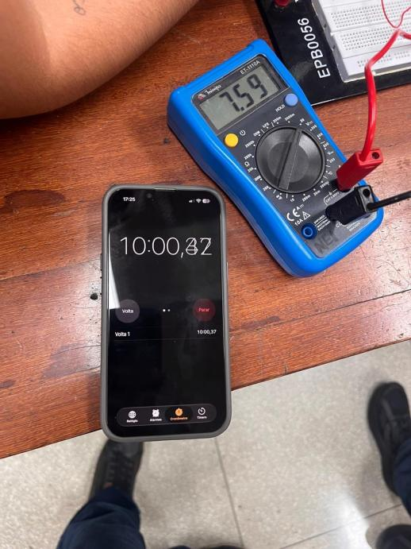

Testes de Energia¶
Roteiro de Testes de Energia (PI1 2026.2)
Relatório das simulações e dos ensaios de bancada do subsistema de energia do robô Micromouse (Grupo 1) para a disciplina Projeto Integrador 1 (semestre 2026.2, FCTE/UnB, Prof. Lui). O foco é o consumo de corrente do subsistema de tração (dois motores DC alimentados por uma bateria LiPo 2S de \(1500\text{ mAh}\)) e a autonomia do robô. O documento cobre quatro blocos:
- Metodologia: materiais, modelagem dos motores no KiCad e equações usadas.
- Consumo de corrente da tração: simulação no KiCad e medição em bancada com os motores parados, em movimento livre e travados (stall).
- Descarga contínua e autonomia: corrente total estimada do robô completo e autonomia frente ao requisito RNF-ENE01.
- Comportamento térmico: aquecimento dos motores, da ponte H, da bateria e do cabeamento durante os ensaios.
Atividades da EAP: #132 — Teste de carga, autonomia e proteção (EAP 4.7.1) e #133 — Escrita do relatório 7.2 (EAP 4.7.2).
Painel Geral de Ensaios de Energia¶
A tabela abaixo reúne os testes de energia do projeto. O identificador de cada teste (ID) leva direto para o detalhamento da seção correspondente, com links para os requisitos e para as evidências.
| ID | Requisito | Descrição do Teste | Período | Responsáveis | Resultados Esperados | Resultados Obtidos | Aprovação | Evidência |
|---|---|---|---|---|---|---|---|---|
| 2.1 | RNF-ENE01 | Corrente da tração com os motores parados (ponte H em corte) | 19/10 a 21/10/2026 | Lucas Oliveira Rafaela Trajano Lucas Peixoto Antônio Lucas |
Corrente praticamente nula no subsistema de tração. | Simulação: \(14,8\text{ nA}\) (\(\approx 0\text{ A}\)). Bancada: \(0,00\text{ A}\). |  |
Figuras 2.1 e 2.2 |
| 2.2 | RNF-ENE01 | Corrente da tração com os motores em movimento livre (sem carga) | 19/10 a 21/10/2026 | Lucas Oliveira Rafaela Trajano Lucas Peixoto Antônio Lucas |
Corrente próxima do dado do fabricante (\(120\text{ mA}\) por motor a \(6\text{ V}\)). | Simulação: \(296\text{ mA}\) totais. Bancada: \(80\text{ mA}\) totais (\(40\text{ mA}\) por motor). | |
Figuras 2.3 e 2.4 |
| 2.3 | RNF-ENE03 | Corrente de travamento (stall) com o eixo dos motores bloqueado | 19/10 a 21/10/2026 | Lucas Oliveira Rafaela Trajano Lucas Peixoto Antônio Lucas |
Pico de corrente conhecido e suportado pela ponte H e pela proteção. | Simulação: \(3,95\text{ A}\) totais. Bancada: \(1,10\text{ A}\) totais (\(0,55\text{ A}\) por motor). | |
Figuras 2.5 e 2.6 |
| 2.4 | RNF-ENE01 | Descarga contínua e cálculo da autonomia do robô completo | 19/10 a 21/10/2026 | Lucas Oliveira Rafaela Trajano Lucas Peixoto Antônio Lucas |
Autonomia \(\ge 15\text{ min}\) (RNF-ENE01) e \(\ge 30\text{ min}\) para os três labirintos da apresentação final. | Corrente total estimada de \(230\text{ mA}\); autonomia teórica de \(\approx 391\text{ min}\) (6,5 h). | |
Figuras 3.1 e 3.2 |
| 2.5 | RNF-ENE03 | Inspeção térmica dos motores, da ponte H, da bateria e do cabeamento | 19/10 a 21/10/2026 | Lucas Oliveira Rafaela Trajano Lucas Peixoto Antônio Lucas |
Nenhum componente com aquecimento capaz de causar dano. | Motor aquece em stall sem danificar o chassi; ponte H, bateria e fios sem aquecimento relevante. | |
Seção 4.1 |
Testes de energia registrados no relatório de hardware
A medição da tensão da bateria pelo ADC (RF-ENE02) e a estabilidade das linhas de \(3,3\text{ V}\) e \(5,0\text{ V}\) sob carga dos motores (RNF-ENE02) foram ensaiadas junto com a eletrônica e estão documentadas no teste 3.8 do relatório de hardware. A matriz de rastreabilidade ao final reúne todos os requisitos de energia.
1. Metodologia¶
1.1 Contexto e Objetivos¶
No Projeto Integrador 1, o robô precisa concluir três labirintos, com até 10 minutos cada, na apresentação final. Por isso, é preciso confirmar que o subsistema de energia sustenta esse tempo de funcionamento. Conhecer o consumo dos motores em cada condição de operação também é a base para dimensionar a bateria, a ponte H e as proteções do circuito.
Objetivos dos ensaios:
- Simular no KiCad as correntes dos motores nas condições parado, em movimento e travado;
- Medir em bancada as correntes nas mesmas três condições;
- Comparar os valores simulados e medidos e explicar as diferenças;
- Estimar a corrente contínua total do robô completo e a sua autonomia;
- Observar o comportamento térmico dos componentes críticos do subsistema de energia.
1.2 Materiais e Ferramentas¶
- Bateria LiPo 2S de \(1500\text{ mAh}\): tensão de \(7,60\text{ V}\) no início dos ensaios (nas simulações, adotou-se \(7,4\text{ V}\) nominais);
- Dois motores DC: corrente de stall de \(1,6\text{ A}\) e corrente sem carga de \(120\text{ mA}\), ambas a \(6\text{ V}\) e por motor (dados do fabricante);
- Protoboard EPB0056;
- Multímetro digital e cronômetro;
- Software KiCad, para a simulação dos circuitos.
1.3 Modelagem e Procedimento¶
Na simulação, cada motor foi representado por um resistor ligado em paralelo à fonte \(V_1 = 7,4\text{ V}\). Assim, a corrente total fornecida pela bateria é a soma das correntes dos dois ramos. A resistência adotada em cada condição foi:
| Condição | Resistência por motor | Origem do valor |
|---|---|---|
| Parados | \(1\text{ G}\Omega\) | Circuito em corte (chaves ou ponte H abertas) |
| Movimento livre | \(50\ \Omega\) | \(6\text{ V} \div 0,12\text{ A}\) (corrente sem carga) |
| Travados (stall) | \(3,75\ \Omega\) | \(6\text{ V} \div 1,6\text{ A}\) (corrente de stall) |
Na bancada, a corrente foi medida com o multímetro nas mesmas três condições: motores parados, girando livremente e com o eixo travado mecanicamente.
1.4 Equações Utilizadas¶
Lei de Ohm e resistência equivalente do motor:
Corrente total do robô e autonomia da bateria:
Onde \(I\) é a corrente (A ou mA), \(V\) a tensão (V), \(R\) a resistência (\(\Omega\)) e \(C\) a capacidade da bateria (mAh). O fator 60 converte horas em minutos. Com esses dados, a corrente de stall a \(7,4\text{ V}\) fica em \(7,4 \div 3,75 \approx 1,97\text{ A}\) por motor.
↑ Voltar ao Painel Geral de Testes
2. Consumo de Corrente do Subsistema de Tração¶
Para cada condição de operação, são apresentados o resultado da simulação e o da medição em bancada, seguidos da comparação.
2.1 Motores Parados (ID 2.1)¶
Ficha do Teste
- Requisito associado: RNF-ENE01 (Autonomia Operacional Contínua)
- Responsáveis: Lucas Oliveira, Rafaela Trajano, Lucas Peixoto e Antônio Lucas
- Período: 19/10/2026 a 21/10/2026
- Atividade da EAP: #132 — Teste de carga, autonomia e proteção
Simulação no KiCad¶
Com os dois motores modelados como resistores de \(1\text{ G}\Omega\) (ponte H em corte), a fonte fornece \(-14,8\text{ nA}\), ou seja, \(7,4\text{ nA}\) em cada ramo (\(7,4\text{ V} \div 1\text{ G}\Omega\)). O sinal negativo é apenas o sentido convencional que o simulador adota para a corrente fornecida pela fonte.
Para o funcionamento do micromouse, esse valor é nulo na prática. O simulador não mostra exatamente \(0\text{ A}\) porque calcula o valor exato da corrente que atravessa a resistência de \(1\text{ G}\Omega\).

Figura 2.1: Esquemático e resultado da simulação com os motores parados.Ensaio em bancada¶
A medição prática confirmou \(0,00\text{ A}\) no subsistema de tração.

Figura 2.2: Bancada com os motores parados; o multímetro indica 0,00 A.Resultado do Teste 2.1
Simulação (\(\approx 0\text{ A}\)) e bancada (\(0,00\text{ A}\)) coincidem. No robô montado, o consumo parado não será nulo: o ESP32, os sensores e a ponte H em standby continuam drenando corrente da bateria. Esse consumo está incluído na estimativa da eletrônica usada no cálculo da autonomia.
↑ Voltar ao Painel Geral de Testes
2.2 Motores em Movimento Livre (ID 2.2)¶
Ficha do Teste
- Requisito associado: RNF-ENE01 (Autonomia Operacional Contínua)
- Responsáveis: Lucas Oliveira, Rafaela Trajano, Lucas Peixoto e Antônio Lucas
- Período: 19/10/2026 a 21/10/2026
- Atividade da EAP: #132 — Teste de carga, autonomia e proteção
Simulação no KiCad¶
Com \(7,4\text{ V}\) aplicados a dois resistores de \(50\ \Omega\) em paralelo, a simulação fornece \(148\text{ mA}\) por motor, ou \(296\text{ mA}\) totais fornecidos pela bateria.

Figura 2.3: Esquemático e resultado da simulação com os motores em movimento livre.Esse valor corresponde ao motor girando livremente no ar. Com a autonomia calculada só para a tração simulada, temos:
Na pista, o peso do robô, o atrito das rodas e das engrenagens e o consumo da eletrônica farão a bateria durar menos, mas ainda com ampla margem em relação ao necessário.
Ensaio em bancada¶
O multímetro indicou \(40\text{ mA}\) por motor, ou \(80\text{ mA}\) totais, bem abaixo dos \(148\text{ mA}\) por motor previstos na simulação.

Figura 2.4: Bancada com um motor girando livremente; o multímetro indica 0,04 A.Resultado do Teste 2.2
O consumo real em movimento livre (\(80\text{ mA}\) para os dois motores) foi menor que o simulado e que o cenário baixo do projeto conceitual de energia (\(0,30\text{ A}\) por motor). Esse valor é o limiar mínimo de tração: no labirinto, o peso do chassi, o atrito dos pneus com o piso e as curvas exigirão mais torque, e a corrente real deve subir em direção ao valor simulado.
↑ Voltar ao Painel Geral de Testes
2.3 Motores Travados em Stall (ID 2.3)¶
Ficha do Teste
- Requisito associado: RNF-ENE03 (Proteção por Sobrecorrente)
- Responsáveis: Lucas Oliveira, Rafaela Trajano, Lucas Peixoto e Antônio Lucas
- Período: 19/10/2026 a 21/10/2026
- Atividade da EAP: #132 — Teste de carga, autonomia e proteção
Simulação no KiCad¶
Com a resistência interna de \(3,75\ \Omega\) por motor, a corrente de stall simulada a \(7,4\text{ V}\) é de \(1,97\text{ A}\) por motor, ou cerca de \(3,95\text{ A}\) totais fornecidos pela bateria.

Figura 2.5: Esquemático e resultado da simulação com os motores travados.Ensaio em bancada¶
Com o eixo bloqueado mecanicamente, o multímetro registrou \(0,55\text{ A}\) por motor, ou \(1,10\text{ A}\) totais.

Figura 2.6: Eixo do motor travado com alicate; o multímetro indica 0,55 A.O valor medido foi menor que o simulado por três motivos que o modelo ideal do KiCad não considera:
- Resistência de contato: fios finos, conexões temporárias na protoboard e as pontas de prova do multímetro somam resistência em série ao circuito, limitando a corrente;
- Resistência interna real: o enrolamento deste lote de motores pode ter resistência maior que os \(3,75\ \Omega\) calculados a partir do datasheet;
- Tensão sob carga: no pico de corrente, a tensão da bateria cai momentaneamente abaixo dos \(7,60\text{ V}\), o que reduz o próprio pico.
Resultado do Teste 2.3
O pico real de travamento (\(1,10\text{ A}\) totais, \(0,55\text{ A}\) por motor) fica abaixo do limite contínuo de \(1,2\text{ A}\) por canal da ponte H TB6612FNG. Assim, a ponte H e o circuito de proteção suportam sem danos o caso em que o robô colide e trava contra uma parede do labirinto.
Pendente: corte do PWM por travamento
O firmware monitora os encoders e, ao detectar uma roda parada com a tração acionada, zera o PWM enviado à ponte H, que deixa de conduzir corrente para os motores. Esse corte deve ocorrer em até \(1,2\text{ s}\) após o travamento e será validado no robô montado, nos testes de integração.
↑ Voltar ao Painel Geral de Testes
2.4 Comparação entre Simulação e Bancada¶
| Cenário | Resistência por motor | Corrente por motor | Corrente total (bateria) | Potência total |
|---|---|---|---|---|
| Parado | \(1\text{ G}\Omega\) | \(7,4\text{ nA}\) | \(14,8\text{ nA}\) (\(\approx 0\text{ A}\)) | \(109,52\text{ nW}\) |
| Em movimento | \(50\ \Omega\) | \(148\text{ mA}\) | \(296\text{ mA}\) | \(2,1904\text{ W}\) |
| Travado (stall) | \(3,75\ \Omega\) | \(1,97\text{ A}\) | \(3,95\text{ A}\) | \(29,2053\text{ W}\) |
Tabela 2.1: Resultados das simulações no KiCad (fonte de 7,4 V).
| Cenário | Simulação (1 motor) | Simulação (2 motores) | Bancada (1 motor) | Bancada (2 motores) |
|---|---|---|---|---|
| Parado | \(\approx 0\text{ A}\) | \(\approx 0\text{ A}\) | \(0,00\text{ A}\) | \(0,00\text{ A}\) |
| Em movimento | \(0,148\text{ A}\) | \(0,296\text{ A}\) | \(0,04\text{ A}\) | \(0,08\text{ A}\) |
| Travado (stall) | \(1,97\text{ A}\) | \(3,95\text{ A}\) | \(0,55\text{ A}\) | \(1,10\text{ A}\) |
Tabela 2.2: Correntes simuladas e medidas nas três condições de operação.
Os valores medidos coincidiram com a simulação com os motores parados e ficaram abaixo dela em movimento e em travamento. Para dimensionar o circuito de proteção, a simulação é, portanto, a estimativa mais conservadora.
↑ Voltar ao Painel Geral de Testes
3. Descarga Contínua e Autonomia¶
3.1 Descarga Contínua e Cálculo da Autonomia (ID 2.4)¶
Ficha do Teste
- Requisito associado: RNF-ENE01 (Autonomia Operacional Contínua) (mínimo de \(15\text{ min}\) em navegação ativa)
- Responsáveis: Lucas Oliveira, Rafaela Trajano, Lucas Peixoto e Antônio Lucas
- Período: 19/10/2026 a 21/10/2026
- Atividade da EAP: #132 — Teste de carga, autonomia e proteção
- Referência de dimensionamento: 4.2 — Projeto conceitual de energia
O teste de descarga contínua foi feito na bancada com o multímetro monitorando a tensão da bateria e um cronômetro marcando o tempo de operação. Após cerca de 10 minutos de ensaio, a bateria se manteve em \(7,58\text{ V}\) a \(7,59\text{ V}\).


Figura 3.1 (esquerda): Montagem em bancada, com o multímetro indicando 7,58 V. Figura 3.2 (direita): Cronômetro em 10:00,37 e multímetro indicando 7,59 V.A corrente contínua do robô completo soma o valor medido dos motores a uma estimativa da eletrônica embarcada:
| Parcela | Corrente | Origem |
|---|---|---|
| Subsistema de tração | \(80\text{ mA}\) | Medido em bancada (dois motores a \(40\text{ mA}\) em movimento livre, teste 2.2) |
| Controle e sensores | \(150\text{ mA}\) | Estimado: ESP32 ativo, sensores ToF, encoders e corrente de repouso da ponte H |
| Total | \(230\text{ mA}\) |
Aplicando a equação da autonomia:
Para verificar se a conclusão depende da estimativa de \(150\text{ mA}\) da eletrônica, a autonomia foi recalculada com os cenários de consumo do projeto conceitual de energia (ESP32, três sensores ToF, dois encoders, lógica da ponte H, LEDs e monitor da bateria):
| Cenário | Tração | Eletrônica | Corrente total | Autonomia teórica |
|---|---|---|---|---|
| Base deste relatório | \(80\text{ mA}\) (movimento livre) | \(150\text{ mA}\) (estimativa) | \(230\text{ mA}\) | \(\approx 391\text{ min}\) |
| Eletrônica nominal do 4.2 | \(80\text{ mA}\) (movimento livre) | \(\approx 220\text{ mA}\) | \(\approx 300\text{ mA}\) | \(\approx 300\text{ min}\) |
| Pior caso | \(1,10\text{ A}\) (dois motores em stall) | \(\approx 359\text{ mA}\) (conservador) | \(\approx 1,46\text{ A}\) | \(\approx 62\text{ min}\) |
Resultado do Teste 2.4
A autonomia teórica de \(391\text{ min}\) supera com folga o mínimo de \(15\text{ min}\) do RNF-ENE01 e também os \(30\text{ min}\) dos três labirintos da apresentação final (até 10 minutos cada), sem precisar recarregar ou trocar a bateria entre eles. Mesmo no pior caso, com os dois motores travados o tempo todo e a eletrônica no cenário conservador, a bateria duraria cerca de \(62\text{ min}\).
Estimativa a substituir por medição
Os \(150\text{ mA}\) da eletrônica são uma estimativa. O próximo passo é medir o consumo real da eletrônica no robô completo e repetir o cálculo da autonomia com esse valor.
↑ Voltar ao Painel Geral de Testes
4. Comportamento Térmico¶
4.1 Inspeção Térmica dos Componentes Críticos (ID 2.5)¶
Ficha do Teste
- Requisito associado: RNF-ENE03 (Proteção por Sobrecorrente)
- Responsáveis: Lucas Oliveira, Rafaela Trajano, Lucas Peixoto e Antônio Lucas
- Período: 19/10/2026 a 21/10/2026
- Atividade da EAP: EAP 4.7 — Testes de Energia
Durante os ensaios, foi observado o aquecimento dos componentes críticos do subsistema de energia:
| Componente | Condição observada | Situação |
|---|---|---|
| Motores DC | No ensaio com o eixo travado, a carcaça esquentou rapidamente, mas não a ponto de danificar o chassi ou as peças do robô caso ele fique travado no labirinto. | Adequado |
| Ponte H (TB6612FNG) | O circuito integrado manteve a temperatura dentro do normal. | Adequado |
| Bateria LiPo e cabeamento | No teste de descarga contínua, a bateria e os fios não esquentaram, o que indica taxa de descarga (fator C) dentro do limite. | Adequado |
Resultado do Teste 2.5
Nenhum componente apresentou aquecimento capaz de causar dano. O ponto de maior atenção é o motor em stall, situação que o corte do PWM por travamento (validado nos testes de integração) vai limitar a no máximo \(1,2\text{ s}\).
↑ Voltar ao Painel Geral de Testes
5. Conclusão e Próximas Etapas¶
As simulações e os ensaios em bancada caracterizaram o consumo de corrente da tração do micromouse nas três condições de operação:
- Parados: a simulação previu \(\approx 0\text{ A}\) e a bancada confirmou \(0,00\text{ A}\);
- Movimento livre: a simulação indicou \(0,296\text{ A}\) para os dois motores e a bancada registrou \(0,08\text{ A}\);
- Travados: a simulação indicou \(3,95\text{ A}\) e a bancada \(1,10\text{ A}\). A diferença vem da resistência de contato, da resistência interna real dos motores e da queda de tensão da bateria sob carga.
Com corrente contínua estimada de \(230\text{ mA}\) para o robô completo, a autonomia teórica é de \(391\text{ min}\), muito acima do requisito, mesmo considerando o aumento de consumo esperado no labirinto. O comportamento térmico dos motores, da ponte H e da bateria foi adequado.
Próximas etapas:
- Validar no robô montado o corte do PWM em até \(1,2\text{ s}\) após o travamento (testes de integração);
- Medir o consumo real da eletrônica embarcada para substituir a estimativa de \(150\text{ mA}\);
- Ensaiar a proteção por sobrecorrente (fusível), o corte por subtensão e a chave geral (ver a matriz abaixo).
↑ Voltar ao Painel Geral de Testes
6. Matriz de Rastreabilidade dos Requisitos de Energia¶
A tabela relaciona cada requisito de energia com o teste que o cobre e a métrica obtida. Os requisitos ainda sem ensaio aparecem como pendentes.
| Requisito | Descrição | ID de Teste | Ensaio e Métrica Obtida | Status |
|---|---|---|---|---|
| RF-ENE01 | Conversão e distribuição de potência em barramentos de tração e de lógica | 3.8 (hardware) | Linhas de \(3,3\text{ V}\) e \(5,0\text{ V}\) estáveis com os motores em operação. | Conforme |
| RF-ENE02 | Medição contínua da tensão da bateria em formato digital | 3.8 (hardware) | Divisor 100k/47k no ADC1_CH6 com erro menor que \(1,5\%\). | Conforme |
| RF-ENE03 | Corte automático dos motores por subtensão em menos de \(200\text{ ms}\) | — | Ainda não ensaiado em bancada. |  Pendente Pendente |
| RF-ENE04 | Chave geral mecânica com corte para \(0\text{ mA}\) | — | Ainda não ensaiado em bancada. | Pendente |
| RNF-ENE01 | Autonomia mínima de \(15\text{ min}\) em navegação ativa | 2.1 2.2 2.4 |
Autonomia teórica de \(\approx 391\text{ min}\) com \(230\text{ mA}\) totais (\(\approx 62\text{ min}\) no pior caso). | Conforme |
| RNF-ENE02 | Tensão lógica dentro de \(\pm 5\%\) sob transitórios dos motores | 3.8 (hardware) | Linhas de \(3,3\text{ V}\) e \(5,0\text{ V}\) na faixa de \(\pm 5\%\) em partidas e reversões. | Conforme |
| RNF-ENE03 | Proteção por sobrecorrente (fusível) atuando em menos de \(500\text{ ms}\) | 2.3 2.5 |
Corrente de stall medida (\(1,10\text{ A}\)) e sem aquecimento danoso; atuação do fusível ainda não ensaiada. |  Parcial Parcial |
| RNF-ENE04 | Conector da bateria com polaridade à prova de inversão | — | Ainda não ensaiado em bancada. | Pendente |
| RNF-ENE05 | Recarga completa da bateria em menos de \(90\text{ min}\) | — | Ainda não ensaiado em bancada. | Pendente |